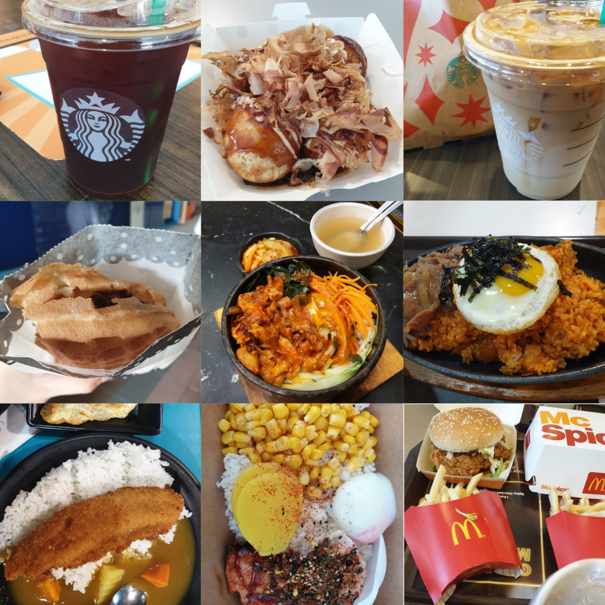

SP Experience

My initial thoughts
-
Stepping into SP was certainly a drastic change from the guided learning environment I was used to. At first, I was rather lost as Polytechnic was unlike secondary school, where the teacher would tell you exactly what to do, I realised I had to take charge of my own learning. During the first two weeks, I was blessed to find comfort and motivation in my group of friends, who I discovered were learning to adapt to their new environment too.
School of Computing
-
During our orientation, the SOC ambassadors organised engaging and meaningful activities for us, the
Year 1s, to become more acquainted with each other. We played games such as Pictionary, a game where we had to guess each other’s drawings. The positive energy radiated by the seniors was infectious and soon everyone found themselves letting loose and having fun. Additionally, the seniors are truly dedicated to helping out juniors who are determined to polish their computing skills. They have organised a Kahoot session, comprising of several revision questions to put their juniors’ computing knowledge to the test, concurrently helping them to gain confidence in their various computing skills.
Adjusting to the new environment
-
As weeks flew by, I decided to venture out of my comfort zone and joined tennis! It provided me with a platform to sweat my troubles away, at the same time enabling me to get a workout in. Exercise is important to me so I am grateful for my newly found CCA. Moreover, the food in SP have been flavourful and appetising, nourishing my mind. With a wide variety to choose from, you can never go wrong!